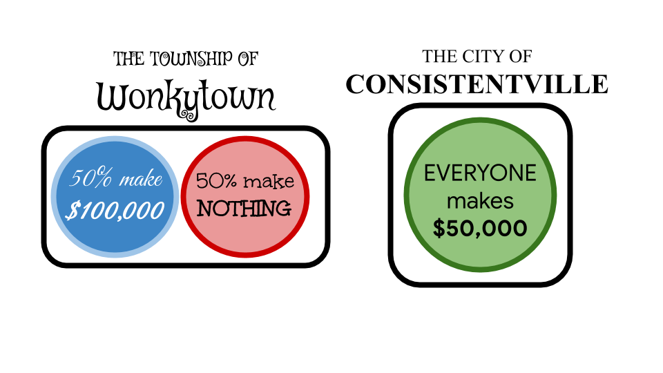
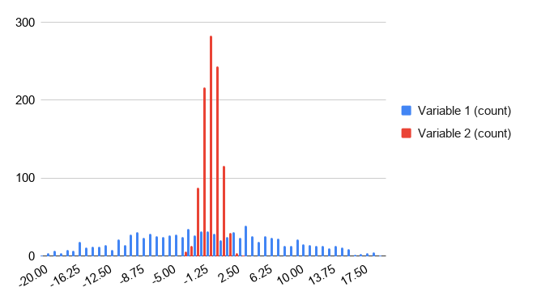

Measures of Spread¶
Measures of center are very useful for giving you a “best guess” at a variable. But how useful are those guesses?
Trying to guess the value of a variable that doesn’t change much is a lot easier than trying to guess the value of a variable that changes drastically. To take an extreme example, suppose there are two very different cities next to each other. In “Consistentville”, everyone has the same yearly salary of $50,000. In “Wonkytown” exactly half the people have a yearly salary of $100,000, and the other half are unemployed.
Q-1: What is the mean salary in Consistentville? (Give your answer in dollars.)
Q-2: What is the mean salary in Wonkytown? (Give your answer in dollars.)
Since all residents of Consistentville make the same salary of $50,000, the mean salary is simply $50,000. Now since exactly half the residents of Wonkytown make $100,000 and the other half make $0, it should make some intuitive sense that the mean salary in Wonkytown is also $50,000. So “on average”, residents of Consistentville and Wonkytown make the same salary.
Q-3: If you take a random resident of Consistentville, what would you guess their salary to be? Do you expect to be correct? What about in Wonkytown?
If you take a random resident of Consistentville and guess their salary to be the mean of $50,000, you would be right every single time. However, if you did the same in Wonkytown, you would be wrong every single time! Not only would your guess be wrong, it would be either $50,000 below or $50,000 above their true salary, both of which are way off! So in this case, while the mean was an extremely effective “best guess” in Consistentville, it was not so useful in Wonkytown.
In a city like Wonkytown, it is pretty hard to form a “best guess”. That’s where measures of spread come in. A measure of spread statistic doesn’t refine a measure of center, but it can tell you how useful that measure of center is. The most common measure of spread is called the standard deviation.
Standard Deviation Definition
The standard deviation is a measure of how spread out data points in a dataset are. A low standard deviation means the data points in the dataset are generally close together. A high standard deviation means the data points in the dataset are generally far apart.
By itself, the standard deviation can help you estimate how good your “best guess” is. It is even more useful when comparing two different datasets, as it can tell you which dataset is more spread out. In the case of comparing Consistentville and Wonkytown, knowing the standard deviation alone would tell you that in Consistentville everyone makes the same salary, while in Wonkytown the salaries differ from the mean on average by $50,000. If you were guessing salaries, knowing the standard deviation would help you make a much more informed guess!
Standard Deviation in a Histogram¶
Look at the side-by-side histogram below. It contains two variables (one in red and one in blue) with the same mean, but one with a much higher standard deviation than the other.
Red
-
Incorrect: The red values are all clustered close together around 0.
Blue
-
Correct. The blue values are spread out over a wide range.
Q-4: Which variable do you think has a higher standard deviation?
Example: Weather¶
Returning to the comparison of weather in Seattle and NYC, this example shows you how to calculate the standard deviation of a dataset in Sheets. Again, you will use the daily maximum temperature column.
Standard Deviation in Sheets
The STDEVP function calculates the standard deviation of a dataset. As
with previous summary statistic functions, you can either input several
values separated by a comma (e.g. =STDEVP(value1, value2, value3)), or
you can input a range of cells of which you want to know the mean (e.g.
=STDEVP(A1:A10)).
Note that there are several variants of the STDEVP function in Sheets. In
this section, you can always use the STDEVP function. If you are interested
in the difference between the different variants, this thread goes into some
detail on the practical differences, and this thread goes into the
mathematical theory behind the difference. In practice, there is not much
numeric difference between the different functions.
Finding the standard deviation of the maximum daily weather for Seattle is
almost the same as finding the average, except you use the STDEVP function.
This tells you that the standard deviation of the maximum daily temperature in
Seattle is 12.9 degrees.
Q-5: What is the standard deviation of the maximum daily temperature of NYC? (Use 1 decimal point in your answer.)
You have already seen earlier the mean temperatures for Seattle and NYC differ only by 3 degrees. The standard deviation shows you that the variability of the maximum daily temperature is almost 7 degrees (more than 50%) higher in NYC compared to Seattle.
This example should illustrate that knowing the mean sometimes isn’t enough. Just using the mean, you may have believed that Seattle and NYC have very similar temperature all year round. Knowing the standard deviation alongside the average, however, tells you that while Seattle and NYC have similar mean temperatures, there is much higher year-round variability in NYC. If you then add in the knowledge of the maximum and minimum temperatures of both cities, you would have a pretty good idea of the year-round temperature seasonality of both cities.
Extension: Variance¶
This material is intended as a reference for those who are curious. It describes, with more theory and mathematics, why variance is a crucial concept for mathematicians and statistics.
While standard deviation is more widely used, it is actually derived from another measure of spread, called the variance. More precisely, the standard deviation is the square root of the variance. Many probability distributions are defined in terms of mean and variance (not standard deviation).
Variance Definition
The variance is the mean of the squared deviation (or squared difference) from the variable to its mean.
That is a lot of words. A better way to understand it is to outline the procedure for calculating the variance of a dataset, call it dataset A.
Calculate the mean of dataset A.
Find the difference between the mean of dataset A and each value in dataset A. These values form a new dataset, dataset B.
Square all the values in dataset B. These values form a new dataset, dataset C.
The mean of dataset C is the variance of dataset A.
More intuitively, dataset B shows you how far points in dataset A are from the center of dataset A. Squaring the values in dataset B is a way to make the differences all positive (to make sure values above and below the mean are equally “far”). Then the mean of the squared differences in dataset C tells you “on average” how far the points in A are from the mean.
Variance in Sheets
The VARP function calculates the variance of a dataset. As with previous
summary statistic functions, you can either input several values separated by
a comma (e.g. =VARP(value1, value2, value3)), or you can input a range of
cells of which you want to know the mean (e.g. =VARP(A1:A10)). (Note:
the same caveat as with STDEVP applies
to VARP.)
In Consistentville, every salary is $50,000 and the mean is $50,000. Therefore, all values in dataset B are zero, so all values in dataset C are zero. The mean of this all-zero dataset is zero, so the variance of salary in Consistentville is zero. (This happens if and only if all values in the dataset are the same.)
In Wonkytown, every salary is $50,000 away from the mean (either above or below). Therefore, all values in dataset B are $50,000 so all values in dataset C are the square of that, 2,500,000,000, in units of dollars squared. The mean of dataset C, and therefore the variance of salary in Wonkytown, is this same value.
One downside of the variance is its unit of measure. Since it involves squaring the values of dataset B, the unit of measure of the variance is always the squared unit of measure of the initial dataset (dataset A). For example, if considering the salaries of Consistentville or Wonkytown, the variance would be in squared dollars. This might not be very useful, and this is how the standard deviation (square root of the variance) came to be widely used. The purpose of the standard deviation is to express the variance but in the same unit as the data. The standard deviations of the salaries in Consistentville and Wonkytown are measured in dollars.
In Consistentville, the variance is zero, so the standard deviation is the square root of zero, which is also zero. In Wonkytown, the variance is 2,500,000,000 dollars squared, so the standard deviation is the square root of this, which is (you may have guessed it) $50,000. Both of these findings tell you just how far you can expect your guess to be from the mean: $0 in Consistentville, $50,000 in Wonkytown.
Note that it is not always possible to calculate the variance and standard deviation manually. Usually, you will have to use a tool such as Sheets.
Example: Student Heights¶
Suppose you have this dataset containing the heights of students in a class.
First, use the method of calculating variance (above) to calculate the variance
and standard deviation of this dataset. Then, you can confirm your answers using
VARP and STDEVP.
Q-6: What is the variance of the heights among these students? (Use 1 decimal point in your answer).
Q-7: What is the standard deviation of the heights among these students? (Use 1 decimal point in your answer).